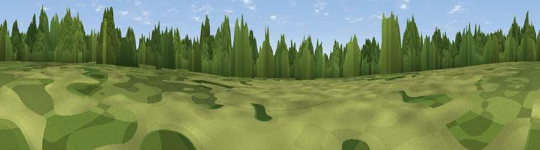

Viewpoint near Iver Heath
#41224 in England · top 48% of its area beats it · near Iver HeathThe view, rendered

A 360° render of this exact spot computed from the terrain model, tree cover and land cover — summer colours, afternoon light, calibrated against photographs of famous viewpoints. Real trees, hedges and buildings will differ in detail.
The panorama
Grey silhouette: terrain skyline in each direction (720 bearings, Earth curvature and refraction included). Dashed green: skyline with trees (+15 m) and buildings (+8 m) as obstacles. Blue strip: how far the ground is visible on each bearing.
Where the view opens
Wedge length = distance to the farthest visible ground on that bearing (vegetation-aware). Rings at 10, 25 and 50 km.
What fills the view
49% woodland · 35% grassland · 8% built-up · 6% cropland ·
Angular shares of the visible panorama (visual magnitude), not map area. Landscape diversity 0.50 (0–1 Shannon).
Key numbers
More beautiful places nearby
The staircase of upgrades: each row has a higher view potential than everything closer. Driving times are estimates from straight-line distance, calibrated against real road routing — check an actual route before setting out.
| Place | Direction | Drive | Score |
|---|---|---|---|
| Viewpoint near Colham Green | ESE · 6 km | ~13 min | 32.4 |
| Windsor Castle | SW · 7 km | ~14 min | 53.3 |
| Viewpoint near Bishopsgate | SSW · 10 km | ~19 min | 53.6 |
| Harrow on the Hill | ENE · 15 km | ~27 min | 60.7 |
| Brush Hill | NW · 29 km | ~45 min | 67.9 |
| Viewpoint near Whiteleaf | NW · 29 km | ~46 min | 70.1 |
| Coombe Hill Monument | NNW · 29 km | ~46 min | 75.5 |
| Beacon Hill | WSW · 61 km | ~83 min | 76.7 |
51.53039, -0.53984 · source: osm viewpoint · position refined by local search. Computed location — check access rights before visiting.